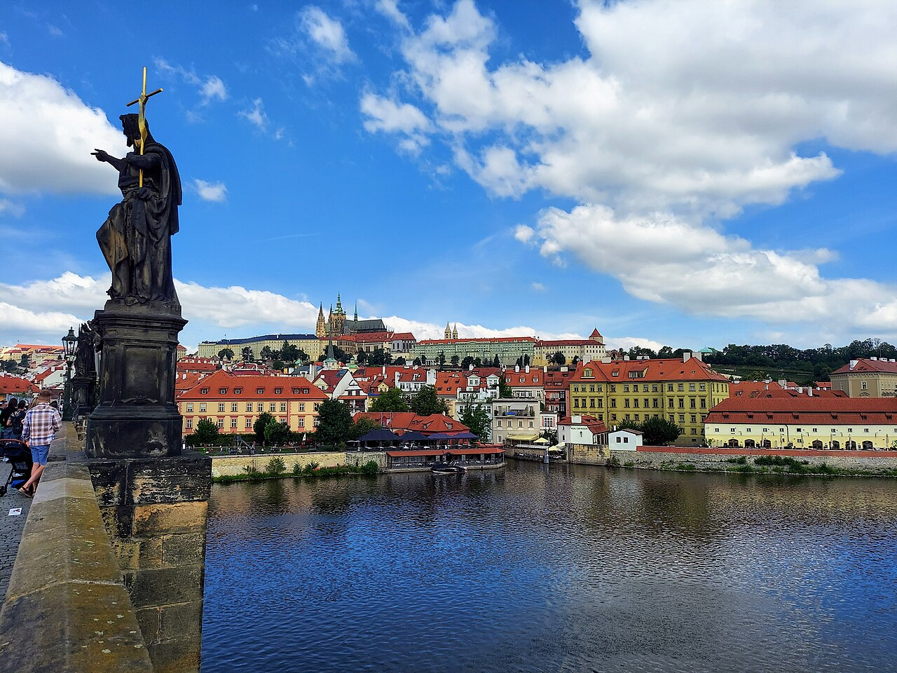
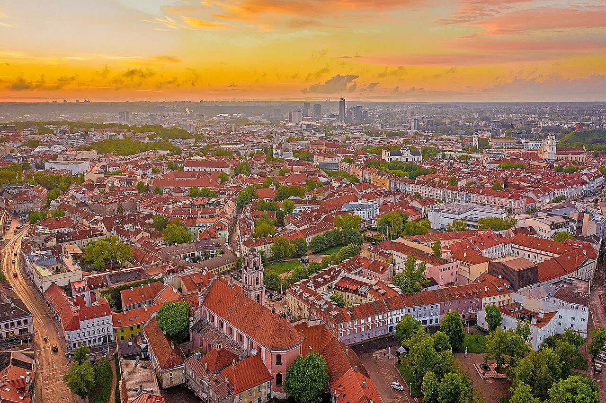

Travel
많이 다녀온 동유럽 루트 베스트 10
한국 여행자와 해외 여행자가 실제로 많이 가는 루트를 함께 봤습니다. 국내 패키지 후기 수와 일정 글, 해외 방문 통계와 일정 가이드, 여행 포럼에서 자주 언급되는 동선을 비교해 순위를 정했습니다.
2026-11-21 확인 · 루트별 상세 일정·지도·이동 정보 연결
- 1


국내외 모두에서 가장 많이 다니는 동유럽 동선
프라하 · 비엔나 · 부다페스트 3대 도시
- 국내
- 체·오·헝 3국 패키지 후기 396건(9일)·145건(7일). 세 도시 모두 인천 직항이고, 국내 7박 9일 일정 글 대부분이 이 순서입니다.
- 해외
- 2024년 프라하 숙박 관광객 808만 명(역대 최다), 부다페스트 외국인 약 600만 명(24% 증가). Rick Steves·Eurail 등 해외 일정 가이드가 가장 먼저 권하는 기본 동선입니다.
근거 마이리얼트립 · Prague City Tourism · Budapest Times · Rick Steves · Eurail
일정 보기 - 2


해외 여행자에게 가장 인기 있는 아드리아 일주
슬로베니아 · 크로아티아 남하 일주: 류블랴나에서 두브로브니크까지
- 국내
- 발칸 2국(크·슬) 패키지 후기 160건. 국내 블로그도 류블랴나에서 두브로브니크로 내려가는 순서를 많이 씁니다.
- 해외
- 2024년 크로아티아 방문객 2,130만 명(역대 최다), 플리트비체 149만 명(163개국). Rick Steves·kimkim·해외 포럼 일정 대부분이 블레드–플리트비체–스플리트–두브로브니크를 잇습니다.
근거 마이리얼트립 · 크로아티아 관광청 · 플리트비체 국립공원 · Rick Steves · 트립스토어
일정 보기 - 3


- 4


국내 후기 1위 발칸 상품과 같은 4개국 동선
발칸 4개국: 크로아티아 · 슬로베니아 · 보스니아 · 몬테네그로
- 국내
- 참좋은여행 발칸 4국(크·슬·보·몬) 9일 후기 747건으로 동유럽·발칸 상품 중 가장 많습니다.
- 해외
- Rick Steves의 크로아티아·슬로베니아·보스니아·몬테네그로 일정과 kimkim 12일 일정이 같은 네 나라를 묶습니다.
근거 마이리얼트립 · Rick Steves · kimkim
일정 보기 - 5


- 6


해외 블로그·포럼에서 가장 자주 보이는 서발칸 2주
발칸 2주 무차량: 자그레브 · 스플리트 · 모스타르 · 사라예보 · 두브로브니크 · 코토르
- 국내
- 국내에서는 패키지보다 자유여행 장기 일정으로 주로 갑니다.
- 해외
- Fodor's·Rick Steves 포럼과 해외 블로그의 2주 발칸 일정이 대부분 스플리트–두브로브니크–모스타르–사라예보–코토르를 잇습니다.
근거 Imperfect Idealist · kimkim · Fodor's 포럼 · Rick Steves 포럼
일정 보기 - 7


폴란드 첫 방문 핵심
바르샤바 · 크라쿠프 폴란드 핵심
- 국내
- 바르샤바 직항. 국내 폴란드 일정 글이 바르샤바·크라쿠프 두 도시를 기본으로 잡습니다.
- 해외
- 2024년 크라쿠프 방문객 1,472만 명(역대 최다), 외국인 숙박객 153만 명. 영국 등 서유럽 여행자가 특히 많습니다.
근거 트립스토어 · 트립스토어 · Kraków Convention Bureau
일정 보기 - 8



직항 두 도시를 잇는 짧은 일정
프라하 · 부다페스트 두 도시
- 국내
- 프라하·부다페스트 모두 직항. 국내 6박 8일 상품과 짧은 연휴 일정 글에 자주 나옵니다.
- 해외
- 프라하–부다페스트 직행 열차가 있고, 해외 가이드에서 비엔나를 뺀 짧은 버전으로 자주 권합니다.
근거 마이리얼트립 · Seat61 · Prague City Tourism
일정 보기 - 9



발트 3국 수도 종단
발트 3국 수도: 탈린 · 리가 · 빌뉴스
- 국내
- 국내에서는 아직 소수지만 핀에어 경유 일정 글이 늘고 있습니다.
- 해외
- 2024년 탈린 외국인 방문객 342만 명(이동통신 집계). 유레일과 해외 블로그 대부분이 탈린·리가·빌뉴스를 버스로 잇는 1주 일정을 권합니다.
근거 The Baltic Times · Eurail · Bucketlistly
일정 보기 - 10
.jpg?width=960)


슬·크·보 3국 패키지 동선
발칸 3국 패키지 동선: 슬로베니아 · 크로아티아 · 보스니아
- 국내
- 발칸 3국 패키지 후기 99건. 교원투어 등 여러 여행사가 같은 구성을 판매합니다.
- 해외
- 해외에서는 몬테네그로까지 넣는 일정이 더 흔해 해외 지표는 4위 루트보다 약합니다.
순위를 정한 방법
- 국내 국내 여행사 후기·일정 글, 한국인 방문 통계
- 해외 관광청 방문 통계(2024), 해외 일정 가이드·여행 커뮤니티
- 한계 실제 검색량은 공개 자료가 없어 쓰지 않았고, 국내·해외 근거를 함께 보고 정했습니다.
내 일정에 맞는 루트는 맞춤 루트 찾기에서 고르세요.